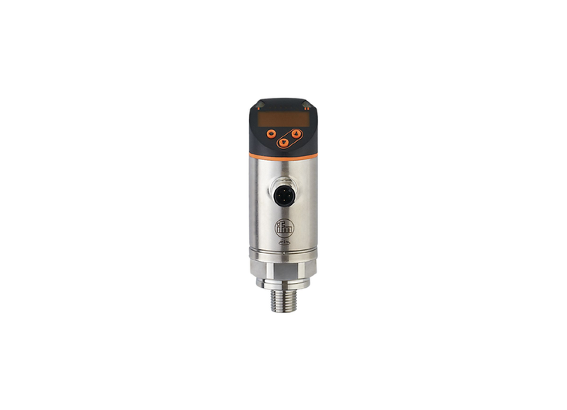
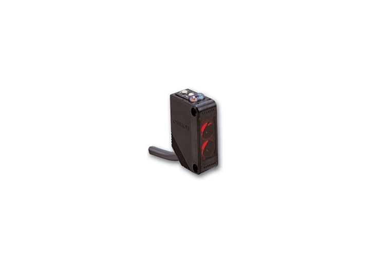
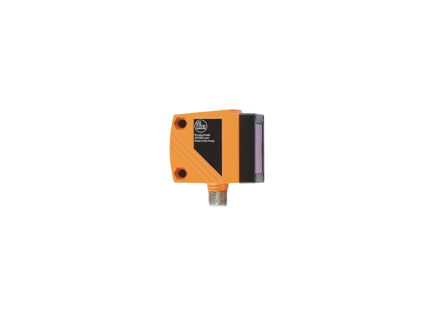
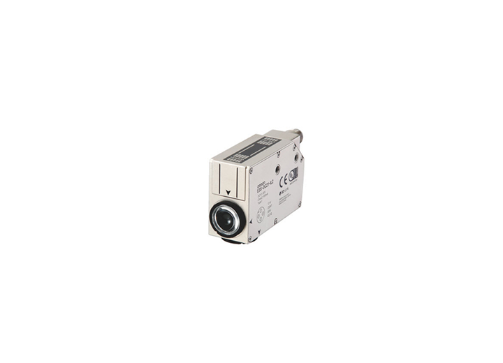
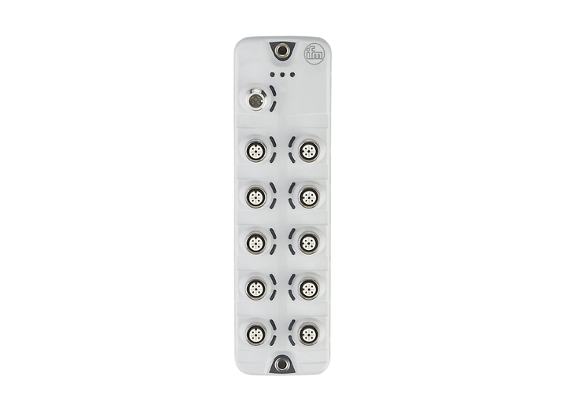

Sensores de presión IFM
Sensores de presión IFM - hasta 600 bar (especiales 1000 bar). Producto de Sensores y control. KDL ayuda a validar compatibilidad, disponibilidad y alternativas para mantenimiento industrial.

Datos para cotizar
- Distancia de detección
- Salida (PNP / NPN)
- Conexión (M8 / M12)
- Voltaje
- Material a detectar
Aplicaciones
- Conteo y posición
- Detección de presencia
- Medición de proceso
Fallas comunes
- Lectura intermitente
- Sin señal
- Daño por golpe o temperatura
Documentacion
Solicita la ficha, manual, diagrama, CAD o certificado correspondiente a la marca y modelo exactos.
Preguntas frecuentes sobre Sensores de presión IFM
¿Qué información necesita KDL para cotizar Sensores de presión IFM?
Comparte distancia de detección, salida (pnp / npn), conexión (m8 / m12), voltaje, material a detectar. Si no tienes todos los datos, una foto de la placa o de la pieza ayuda a comenzar la identificación.
¿Cómo se valida una alternativa compatible?
Se revisan especificaciones críticas, montaje, conexiones, dimensiones, condiciones de trabajo y aplicación. La apariencia no confirma compatibilidad.
¿Qué hago si presenta lectura intermitente?
Documenta el síntoma, número de parte, condiciones de operación y fotografías seguras de la placa y el montaje para orientar la revisión.
¿Puedo solicitar ficha técnica, manual o diagrama?
Sí. Indica la marca y el modelo exactos para localizar la documentación oficial correspondiente.
Productos relacionados



